ЗЕРНОВОЙ КОФЕ
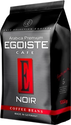
Кофе зерновой EGOISTE Noir
Кофе зерновой EGOISTE Noir – зерновой кофе с
карамельной основой во вкусе, подкрашенной нежной
кислинкой в послевкусии, ванильный аромат дополнен
сильными цитрусовыми нотами.
1499 ₽
Купить
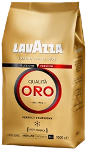
Кофе зерновой LAVAZZA Qualita Oro
Кофе зерновой LAVAZZA Qualita ORO натуральный жареный
– первая смесь LAVAZZA. Этот превосходный купаж стал
результатом многолетнего опыта в смешивании и обжарке
кофейных зерен высокого качества.
1499 ₽
Купить
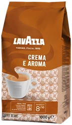
Кофе зерновой LAVAZZA Crema e Aroma
Кофе зерновой LAVAZZA Crema e Aroma натуральный
жареный – легендарный итальянский кофе с деликатным
кремовым вкусом, интенсивным ароматом и невероятно
густой пенкой. Идеально подходит для приготовления
классического эспрессо.
1399 ₽
Купить
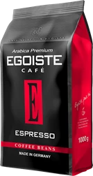
Кофе зерновой EGOISTE Espresso
Кофе зерновой EGOISTE Espresso – кофе с насыщенным
вкусом классического итальянского эспрессо. Спелый
орех и абрикосовая косточка в основе и пряное
послевкусие дополняет сочный аромат обжаренного
сладкого фундука.
1499 ₽
Купить
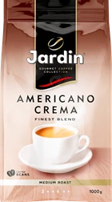
Кофе зерновой JARDIN Americano Crema
Зерновой жареный кофе JARDIN Americano Crema – это
превосходно сбалансированный вкус бленда арабики из
Южной и Центральной Америки, а также высокосортной
робусты.
990 ₽
Купить
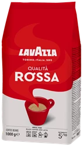
Кофе зерновой LAVAZZA Qualita Rossa натуральный
жареный
Кофе зерновой LAVAZZA Qualita Rossa натуральный
жареный – это истинный итальянский продукт, классика
бренда с непревзойденным вкусом. В тщательно
отобранную смесь эксперты LAVAZZA включили зерна
бразильской арабики для создания обволакивающего
сладкого вкуса и зерна робусты из Африки.
1399 ₽
Купить
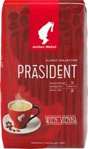
Кофе зерновой JULIUS MEINL Президент
Кофе зерновой JULIUS MEINL Президент натуральный
жареный – это классический бленд, который покорит
традиционной венской обжаркой, ароматом шоколада и
сбалансированным вкусом. Кофе Президент представляет
собой яркий образец венской кофейной культуры.
1299 ₽
Купить
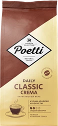
Кофе зерновой POETTI Daily Classic Crema
Кофе зерновой Daily Classic Crema натуральный жареный
от торговой марки POETTI обладает непревзойденным
вкусом. Бархатистый вкус бленда достигается благодаря
купажу тщательно отобранных зерен Арабики и Робусты.
1099 ₽
Купить
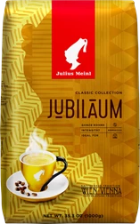
Кофе зерновой JULIUS MEINL
Кофе зерновой JULIUS MEINL Юбилейный натуральный
жареный был создан в честь 100-летнего юбилея компании
Julius Meinl.
1299 ₽
Купить
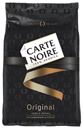
Кофе зерновой CARTE NOIRE
CARTE NOIRE Original создан из специально отобранных
зерен 100% Арабики из Латинской Америки. Его
насыщенный вкус с яркими цитрусовыми нотками и
несравненный аромат превратят каждый глоток кофе в
момент изысканного наслаждения.
1399 ₽
Купить
Молотый кофе
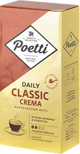
Кофе молотый POETTI Daily Classic Crema
Сочетание отборной арабики и премиальной робусты
создает бархатистый вкус кофе молотого POETTI Daily
Classic Crema. Напиток с нотами шоколада и орехового
пралине с богатым ореховым ароматом. Кофе высокой
плотности с нежной кофейной пенкой порадует любителей
мягких текстур. Средняя степень обжарки.
279 ₽
Купить
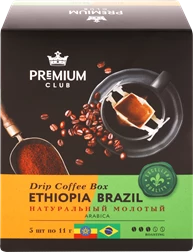
Кофе молотый PREMIUM CLUB
Кофе молотый PREMIUM CLUB Ethiopia/Brazil в
индивидуальных фильтр-пакетах – 100% арабика. Дрип
кофе – это кофе, который легко приготовить в любом
месте, используя только кружку и горячую воду.
229 ₽
Купить
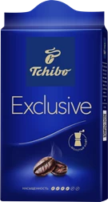
Кофе молотый TCHIBO Exclusive
Кофе молотый TCHIBO Exclusive создан из отборных зерен
сорта арабики, дополненных насыщенными зернами
робусты, для получения гармоничного и тонкого аромата.
Почувствуйте наш опыт и любовь в каждой чашке TCHIBO
Exclusive.
433 ₽
Купить
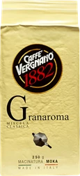
Кофе молотый VERGNANO Гран Арома
Кофе молотый VERGNANO Гран Арома ‒ богатый и
насыщенный бленд, с характерным ароматом какао и
сухофруктов. Кофе, способный сочетать сладость и
интенсивность вкуса, благодаря разумному балансу между
лучшими сортами арабики и робусты (60/40%).
479 ₽
Купить
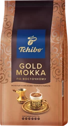
Кофе молотый TCHIBO Gold Mokka
Кофе молотый Gold Mokka По-восточному натуральный от
торговой марки TCHIBO готовится по фирменному рецепту
из лучшего сырья. Отборные зерна Робусты
преимущественно с кофейных плантаций Азии придает кофе
Tchibo Gold Mokka по-восточному насыщенный характер
179 ₽
Купить
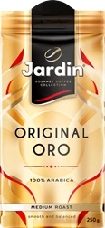
Кофе молотый JARDIN Ориджинал оро
Кофе зерновой STILE DI VITA Cappella sclusivo жареный
– новый стиль вашей жизни. Обжаривается по
традиционным итальянским рецептам. Тщательно
выверенные пропорции создают мягкий сбалансированный
вкус с долгим бархатным послевкусием.
309 ₽
Купить
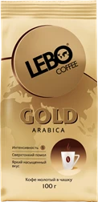
Кофе молотый LEBO Gold Арабика
Молотый кофе LEBO GOLD для заваривания в чашке,
благодаря ультратонкому помолу, идеально подходит для
заваривания прямо в вашей чашке. Достаточно просто
засыпать одну или две чайные ложки кофе GOLD, залить
горячей водой и подождать 2-3 минуты
169 ₽
Купить
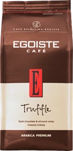
Кофе молотый EGOISTE Truffle Crema
Кофе молотый EGOISTE Truffle Crema – премиальная
арабика с соблазняющей густой пенкой-крема. Деликатный
шоколадный вкус напоминает знаменитые французские
конфеты.
419 ₽
Купить
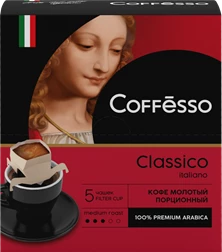
Кофе молотый COFFESSO Classico Italiano
Молотый кофе COFFESSO Classico Italiano выпускается в
фильтр-стаканах, что позволяет приготовить чашку
ароматного молотого кофе, где бы вы ни находились. Они
дополнительно упакованы в защитный многослойный
фольгированный сашет, что гарантирует всегда свежий
вкус и аромат каждой порции кофе. Потребуется только
чашка и кипяток. Удобно брать с собой.
179 ₽
Купить
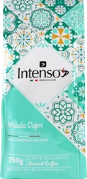
Кофе молотый INTENSO Capri
Кофе молотый INTENSO Capri жареный – кремово-ореховый
цвет бразильской арабики. Ароматный эспрессо с мягким
и нежным вкусом, кажется идеальным, чтобы представить
красивый и изысканный остров Капри. Готовый кофе имеет
привлекательный аромат и приятный вкус. Можно по вкусу
добавлять сахар, молоко или сливки.
359 ₽
Купить
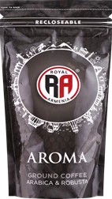
Кофе молотый RA Арома
Кофе молотый RA Арома жареный – насыщенный бленд с
мягким вкусом и богатым ароматом. Смесь арабики и
робусты. Сверхтонкий помол для любимого напитка в
любое время суток.
129 ₽
Купить
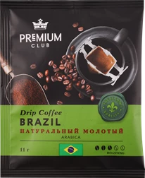
Кофе молотый ЛЕНТА PREMIUM Club Drip Ethiopia
Кофе молотый ЛЕНТА PREMIUM Club Drip Ethiopia/Brazil в
ассортименте – 100% арабика. Дрип кофе – это кофе,
который легко приготовить в любом месте, используя
только кружку и горячую воду. Каждая порция – это
фильтр пакет, внутри которого 11г молотого кофе.
54 ₽
Купить
Кофе в капсулах
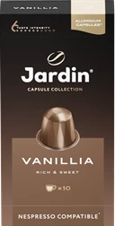
Кофе молотый в капсулах JARDIN Vanillia
Жареный молотый кофе JARDIN Vanillia – это мягкий
сбалансированный вкус арабики средней обжарки,
дополненный тонкой сладостью ванили. Готовый напиток
обладает ярким ароматом и долгим сливочным
послевкусием. Кофе выпускается в капсулах – по 10шт в
одной упаковке.
293 ₽
Купить
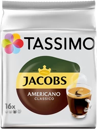
Кофе молотый в капсулах TASSIMO Jacobs Americano
Classico
TASSIMO JACOBS Американо Классико для кофемашин
системы Tassimo. Это насыщенный крепкий американо из
зерен 100% арабики. Свежемолотый кофе надежно
сохраняет первозданный вкус и аромат благодаря
уникальной системе Tassimo.
499 ₽
Купить
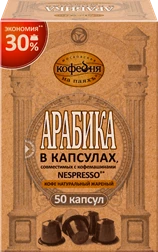
Кофе молотый в капсулах МОСКОВСКАЯ КОФЕЙНЯ НА ПАЯХЪ
Арабика
Кофе молотый в капсулах МОСКОВСКАЯ КОФЕЙНЯ НА ПАЯХЪ
Арабика натуральный жареный приготовлен из премиальных
сортов арабики. Традиционная обжарка придает
насыщенный мягкий вкус с приятной кислинкой и чистый
натуральный аромат настоящего кофе. Можно добавлять
сахар, молоко или сливки уже в готовый напиток.
1099 ₽
Купить
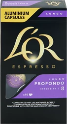
Кофе молотый в капсулах L'OR Espresso Lungo Profondo
Кофе молотый в капсулах L'OR Espresso Lungo Profondo
натуральный жареный – интенсивный эспрессо
увеличенного объема с бархатистой пенкой и богатым
пряным ароматом, в котором ощущаются волнующие нотки
обжаренного миндаля.
369 ₽
Купить
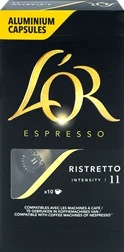
Кофе молотый в капсулах L’OR Espresso Ristretto
Кофе молотый в капсулах L’OR Espresso Ristretto –
крепкий, насыщенный кофе с выразительным вкусом и
богатым пряным ароматом. Каждый глоток безупречного
бодрящего ристретто – новый шаг незабываемого
вкусового путешествия!
369 ₽
Купить
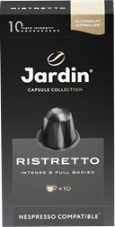
Кофе молотый в капсулах JARDIN Ristretto
Молотый кофе JARDIN Ristretto обладает насыщенным,
густым вкусом классического ристретто с характерной
горчинкой, которую создает темная обжарка. Готовый
напиток зачаровывает ярким ароматом с шоколадной
нотой. Кофе выпускается в капсулах – по 10шт в одной
упаковке.
446 ₽
Купить
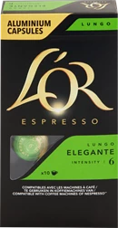
Кофе молотый в капсулах L'OR Espresso Lungo Elegante
Кофе молотый в капсулах L'OR Espresso Lungo Elegante
натуральный жареный – насыщенный эспрессо увеличенного
объема с изысканной пенкой и богатым фруктовым
ароматом, играющим легкими цветочными оттенками.
369 ₽
Купить
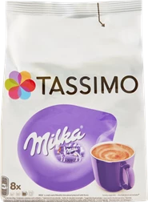
Какао в капсулах TASSIMO Milka
Какао в капсулах TASSIMO Milka – горячий напиток из
какао, молока и сахара для приготовления в кофемашинах
TASSIMO. Содержит только натуральные компоненты.
Обновленная рецептура обеспечивает высокие вкусовые
качества в сочетании с быстротой приготовления.
499 ₽
Купить
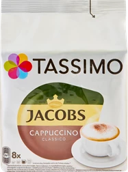
Напиток кофейный в капсулах TASSIMO Jacobs Cappuccino
Напиток кофейный в капсулах TASSIMO Jacobs Cappuccino
– капсулы для приготовления настоящего капучино в
кофемашинах TASSIMO. В комплект для приготовления
одной порции напитка входит T – диск с молотым кофе и
Т-диск с молоком.
499 ₽
Купить
Сувениры
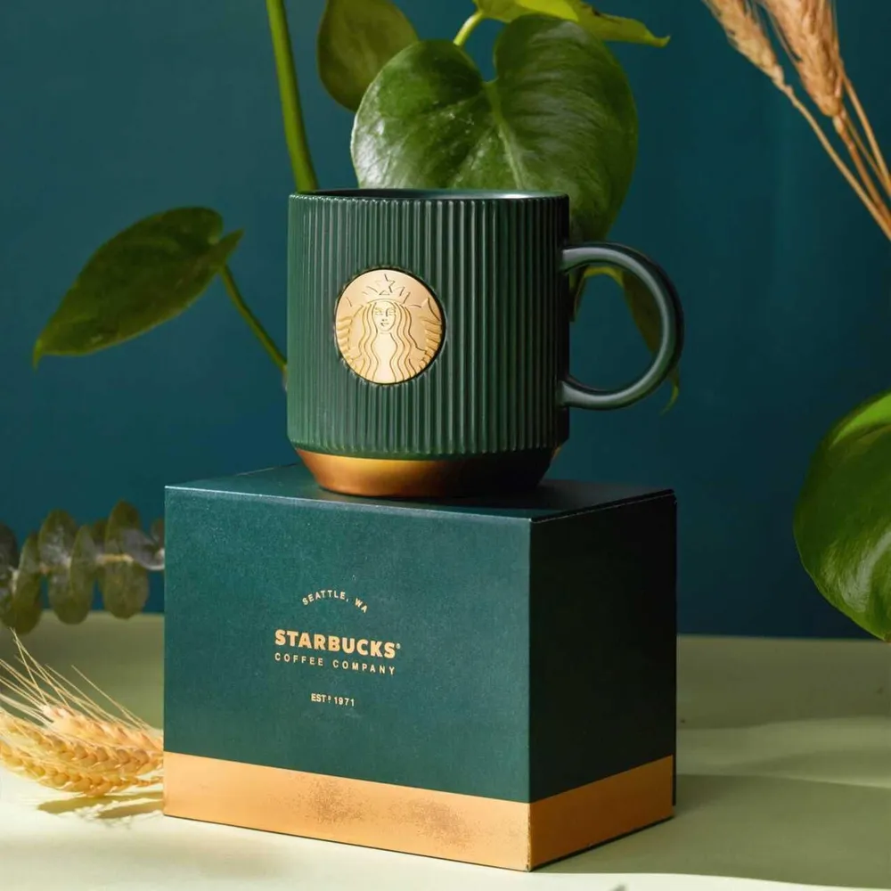
Кружка Starbucks
Классический дизайн Starbucks делает эту чашку
интереснее для обычной жизни, и это привлечет внимание
всех, когда вы держите ее в руке. Что может быть лучше
классики? только классика!
2031 ₽
Купить
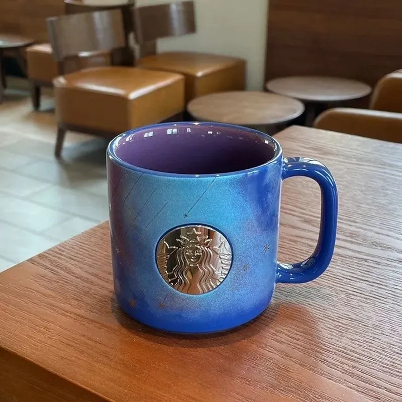
Кружка Starbucks
Торговая марка: Старбакс/ Старбакс Происхождение:
Материковый Китай Тип материала: Керамика Стиль:
американский
2971 ₽
Купить
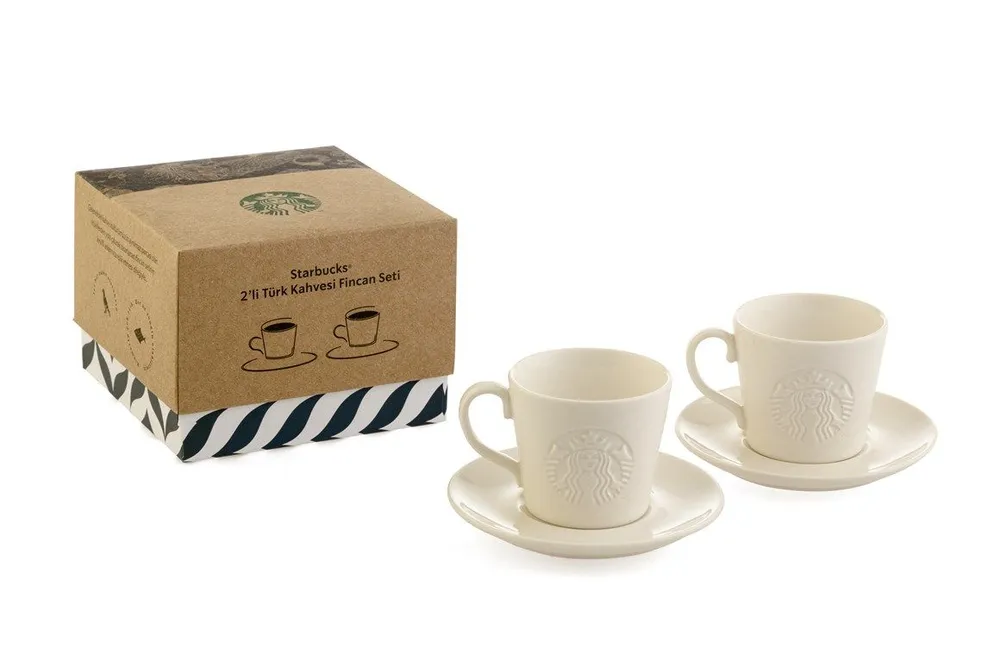
Набор кружек Starbucks
Керамическая чашка и тарелка Starbucks из двух
упаковок для турецкого кофе Инструкции по применению
продуктов могут отличаться. Пожалуйста, прочитайте
руководство пользователя, прилагаемое к продукту,
перед использованием продукта
2739 ₽
Купить